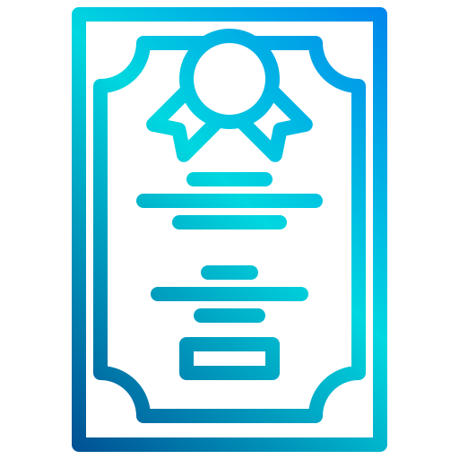
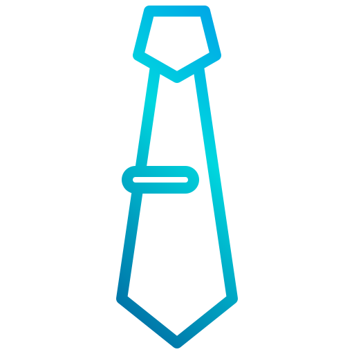
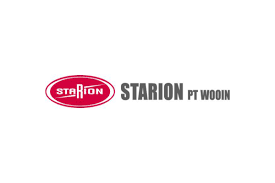
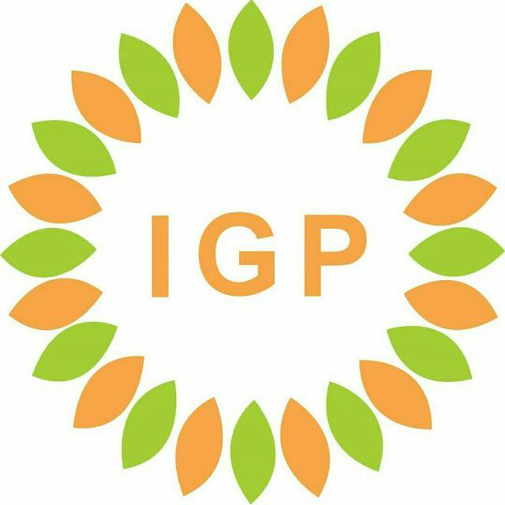
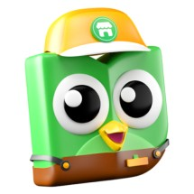
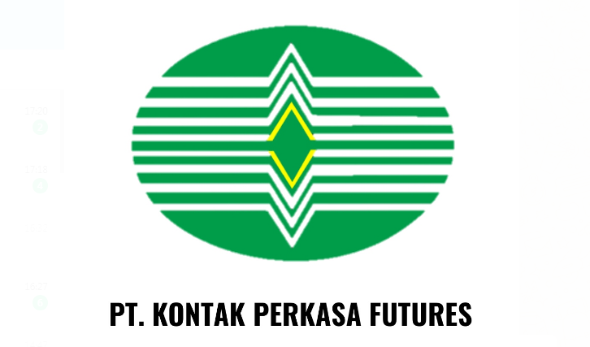
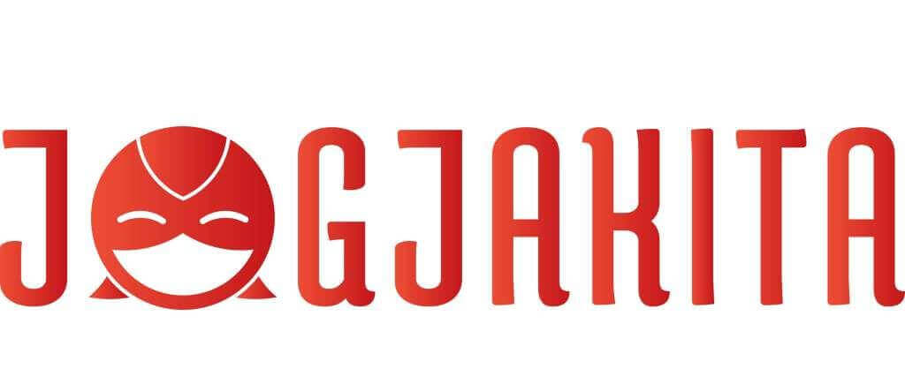

Resume
See my life history below
Education History
TK Al-Hidayah
Kampung Baru, Karawaci, Tangerang, Banten
2005-2006
SD Negeri 1 Karawaci
Kebon Jati, Karawaci, Tangerang, Banten
2006-2009
SD Muhammadiyah Ngijon 1
Turgenen, Sumberagung, Moyudan, Sleman, Special Region of Yogyakarta
2009-2012
SMP Negeri 1 Girimulyo
Nglengkong, Giripurwo, Girimulyo, Kulonprogo, Special Region of Yogyakarta
2012-2015
SMK Ma'arif 1 Nanggulan (Computer and Network Engineering)
Karang, Jatisarono, Nanggulan, Kulonprogo, Special Region of Yogyakarta
2015-2018
University of Alma Ata (Informatics Engineering)
Tamantirto, Kasihan, Bantul, Special Region of Yogyakarta
2018-Now
Academic & Organization Experiences
Paskibra Kecamatan Girimulyo
2014
Paskibra Kecamatan Nanggulan
2015 & 2016
OSIS SMK Ma'arif 1 Nanggulan (Human Rights Department)
2015-2017
Dewan Ambalan Pramuka SMK Ma'arif 1 Nanggulan
2016
IPNU Nanggulan
2016-2017
Munir Japanese Club
2017 & 2018
Karisma Pedukuhan IX
2018-Now
Ikatan Mahasiswa Kulonprogo
2019-Now
Alma Ata English Club (Comminfo Department)
2018-2020
UKI Ar-Rahmah Alma Ata (Comminfo Department)
2019-2020
ADIBA MSME Start Up (Assistant CTO)
2019
Himatik Alma Ata (Human Resources Department)
2018-2019
Himatik Alma Ata (Leader)
2019-2020
Abrar.id
2020-Now
PKM K JOBKUY (PIMTANAS 1st Winner)
2020
VSGA Data Management Staff Training From Digitalentship Kominfo (Certificated Participant)
2021
Work Experience
Starion PT WooIn
Kawasan Industri MM2100, Cikarang, Bekasi, Jawa Barat
Industrial Practice Student
2017
PT IGP International
Tamantirto, Kasihan, Bantul, Spesial Region of Yogyakarta
Production Staff
2019
Griya Website.Com
Bantul, Spesial Region of Yogyakarta
Social Media Admin
2019
Tokopedia Seller
Bantul, Spesial Region of Yogyakarta
Reseller/Dropshipper
2019
Gojek

Spesial Region of Yogyakarta
Driver
Since 2019
PT Kontak Perkasa Futures
Condongcatur, Sleman, Spesial Region of Yogyakarta
Bussiness Consultant
2021
Jogjakita
Spesial Region of Yogyakarta
Driver
Since 2021
Shopee Food Indonesia
Spesial Region of Yogyakarta
Driver
Since 2021
RSU Amanah Sumpiuh
Sumpiuh, Banyumas, Jawa Tengah
IT Staff & Programmer